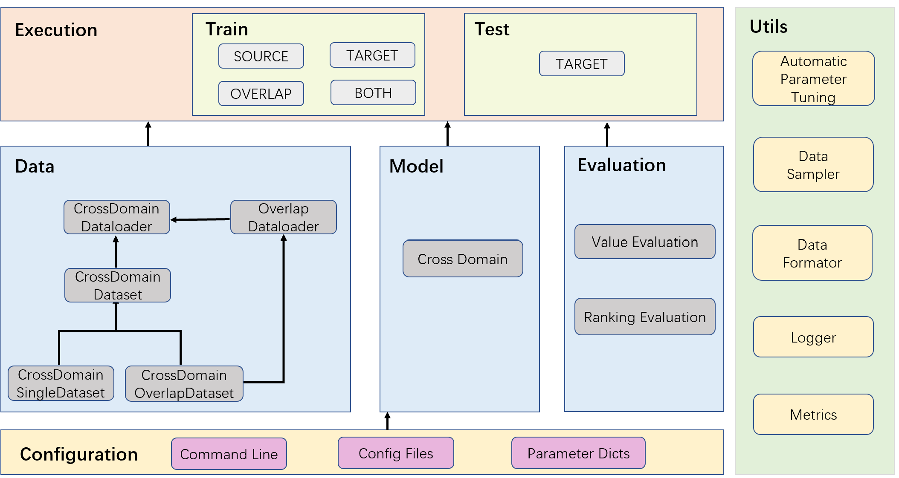

Official implementation for MF-GSLAE: A Multi-Factor User Representation Pre-Training Framework for Dual-Target Cross-Domain Recommendation.
1. Paper
Hao Wang, Mingjia Yin, Luankang Zhang, Sirui Zhao, and Enhong Chen. MF-GSLAE: A Multi-Factor User Representation Pre-Training Framework for Dual-Target Cross-Domain Recommendation. ACM Transactions on Information Systems, 43(2):1-28, 2025.
Paper / Project Page / Citation
MF-GSLAE learns fine-grained user preference factors for dual-target cross-domain recommendation. It pre-trains multi-factor user representations, learns graph structures for preference propagation, and adaptively selects domain-related factors to reduce negative transfer.
2. Highlights
- Targets dual-target cross-domain recommendation where both source and target domains should improve.
- Learns multiple fine-grained user preference factors instead of a single coarse representation.
- Builds graph structure learning into user representation pre-training.
- Provides reproducible configurations for Epinions, Douban, and Amazon cross-domain datasets.
3. Method At A Glance

MF-GSLAE first extracts multiple preference factors from cross-domain behavior, then propagates factor-level relations and selects transferable factors for each target domain.
4. Repository Structure
.
├── recbole_cdr/model/cross_domain_recommender/mfgslae.py # MF-GSLAE model
├── recbole_cdr/ # RecBole-CDR framework code
├── config/ # Dataset config files
├── dataset/ # Included processed datasets
├── asset/arch.png # Architecture figure
├── run_recbole_cdr.py # Training entry
└── docs/ # GitHub Pages project page5. Installation
The paper experiments used:
recbole==1.0.1
torch>=1.7.0
python>=3.7.0Install the environment according to your CUDA/PyTorch setup, then install RecBole-compatible dependencies.
6. Data
Processed datasets are included under dataset/:
dataset/epinions-*dataset/DoubanBookanddataset/DoubanMoviedataset/ama-*
The model configuration file is recbole_cdr/properties/model/MFGSLAE.yaml.
7. Quick Start
Run one of the prepared dataset configurations:
python run_recbole_cdr.py --model=MFGSLAE --config_files=./config/epinions.yaml --gpu_id=18. Reproducing Results
Epinions
Set recbole_cdr/properties/model/MFGSLAE.yaml:
dropout_prob: 0.7
tau: 0.5
factor: 4
epsilon: 5
alpha: 0.1
ratio: 0.99
ratio_threshold: 0.5
l1_rate: 1e-06
learning_rate: 0.001
weight_decay: 0.01
latent_dimension: 64
use_user_loader: trueRun:
python run_recbole_cdr.py --model=MFGSLAE --config_files=./config/epinions.yaml --gpu_id=1Douban
Set recbole_cdr/properties/model/MFGSLAE.yaml:
dropout_prob: 0.5
tau: 2
factor: 4
epsilon: 0.5
alpha: 0.01
ratio: 0.99
ratio_threshold: 0.5
l1_rate: 1e-06
learning_rate: 0.001
weight_decay: 0.01
latent_dimension: 64
use_user_loader: trueRun:
python run_recbole_cdr.py --model=MFGSLAE --config_files=./config/douban_bmovie.yaml --gpu_id=1Amazon
Set recbole_cdr/properties/model/MFGSLAE.yaml:
dropout_prob: 0.9
tau: 1
factor: 8
epsilon: 1
alpha: 0.001
ratio: 0.99
ratio_threshold: 0.5
l1_rate: 1e-06
learning_rate: 0.001
weight_decay: 0.0001
latent_dimension: 64
use_user_loader: trueRun:
python run_recbole_cdr.py --model=MFGSLAE --config_files=./config/ama-elecmov.yaml --gpu_id=19. Configuration Notes
factorcontrols the number of learned preference factors.tau,epsilon, andalphatune the factor-learning and transfer behavior.use_user_loader: trueis required by the reproduced settings above.
10. Experimental Highlights
- The paper reports effectiveness across multiple dual-target cross-domain recommendation datasets.
- The learned factor representations improve interpretability by separating user preferences into multiple subspaces.
- The factor selection module is designed to reduce negative transfer between domains.
11. Notes For Maintainers
- Keep the canonical implementation path visible:
recbole_cdr/model/cross_domain_recommender/mfgslae.py. - Preserve the dataset-specific hyperparameter blocks because they are the fastest route to reproducing reported results.
- If dependency versions are updated, verify compatibility with RecBole-CDR before changing the installation section.
12. Citation
If you find this repository useful, please cite:
@article{wang2025mfgslae,
title={MF-GSLAE: A Multi-Factor User Representation Pre-Training Framework for Dual-Target Cross-Domain Recommendation},
author={Wang, Hao and Yin, Mingjia and Zhang, Luankang and Zhao, Sirui and Chen, Enhong},
journal={ACM Transactions on Information Systems},
volume={43},
number={2},
pages={1--28},
year={2025},
doi={10.1145/3690382}
}13. Contact
- First author: Hao Wang.
- Repository questions: please open a GitHub issue in this repository.